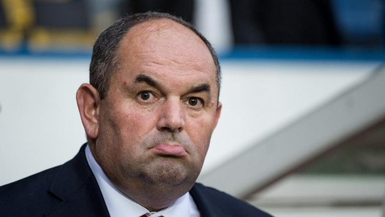

Pelta tuší, že se bez drogy bude muset obejít: Jsem pesimistou, ligu nedohrajeme!
Už tři desetiletí táhne jako majitel fotbalový Jablonec všemi možnými a nemožnými úskalími, ale vždycky si poradil. I teď Miroslav Pelta věří, že si poradí, i když vzhledem k panující koronavirové pandemii je situace těžší než kdy jindy. Na platy hráčům už sáhl, na splátky za televizní práva úpěnlivě čeká, i když přitom tuší, že pět milionů na klubové konto dorazit nemusí, neboť přerušená liga vůbec nemusí pokračovat. „Osobně myslím, že ji dohrát nezvládneme,“ připustil v rozhovoru pro sport.cz, že je pesimistou.